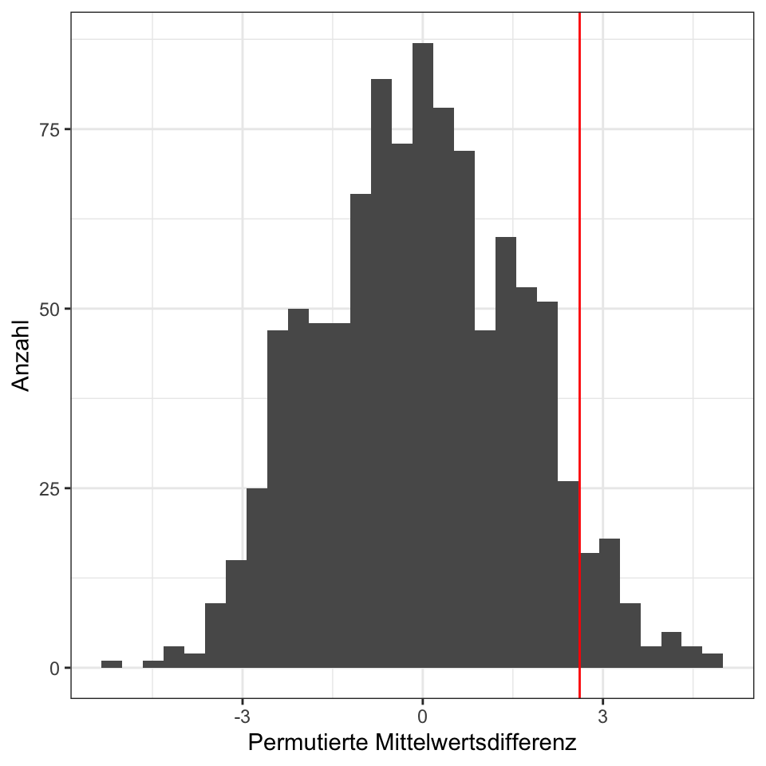
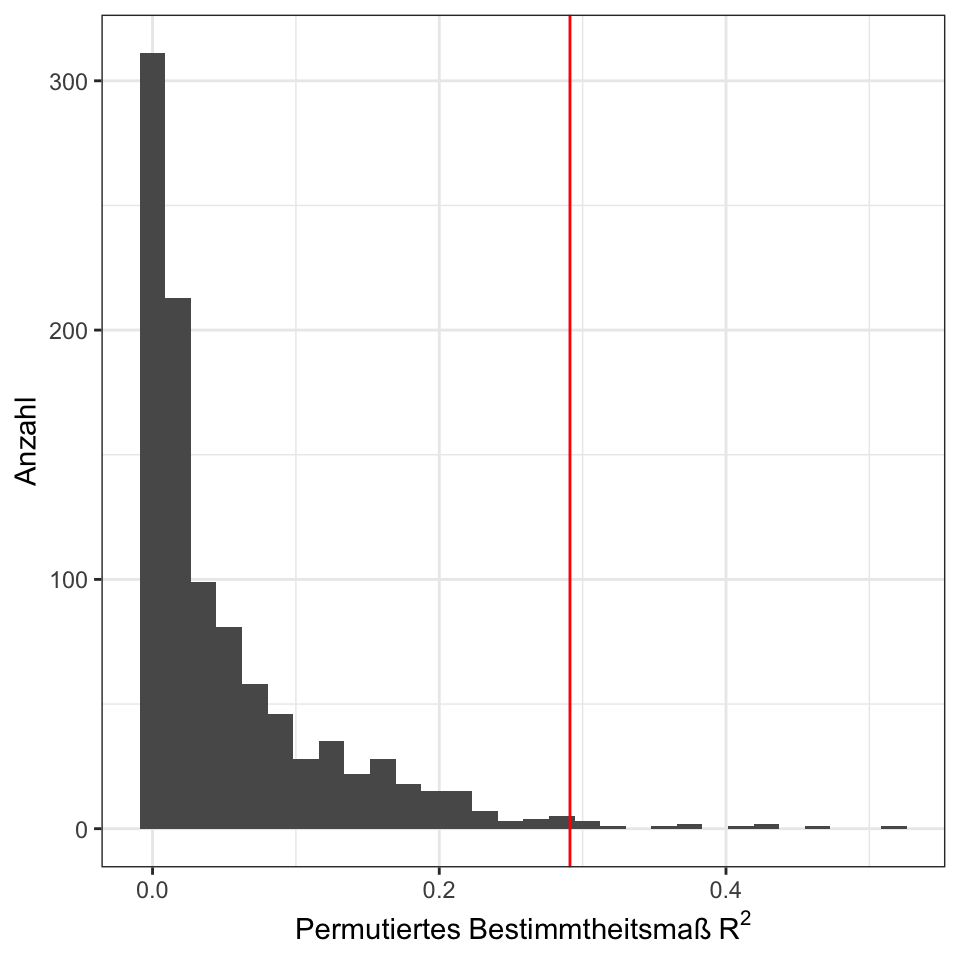

pacman::p_load(tidyverse, magrittr, conflicted, broom)
conflict_prefer("select", "dplyr")
conflict_prefer("filter", "dplyr")
conflict_prefer("mutate", "dplyr")56 Permutationstest
Letzte Änderung am 07. September 2023 um 15:13:21
In diesem Kapitel wollen wir ein mächtiges Verfahren kennen lernen, welches zu den altvorderen Zeiten von Fisher und Co. nicht zu Verfügung stand: der Permutationstest. Dabei war die Theorie schon bekannt, aber die technische Durchführung war unmöglich. Erst seit der Entwicklung von Computern, die hunderte bis tausende Rechenschritte durchführen können, sind Permutationstests erst denkbar.
Permutationstests beruhen nicht auf Annahmen über die Verteilung unseres Outcomes \(y\), wie es bei einigen anderen Tests, wie zum Beispiel dem T-test, der Fall ist. Permutationstests funktionieren, indem die beobachteten Daten mehrmals neu gezogen werden, um einen \(p\)-Wert für den Test zu bestimmen. Wir haben es also mit einem iterativen Prozess zu tun. Oder anders gesagt, wir simulieren hier Daten und damit die Nullhypothese. Erinnern wir uns daran, dass der \(p\)-Wert als die Wahrscheinlichkeit definiert ist, Daten zu erhalten, die genauso extrem sind wie die beobachteten Daten, wenn die Nullhypothese wahr ist. Wenn die Daten gemäß der Nullhypothese mehrmals gemischt werden, kann die Anzahl der Fälle mit Daten, die genauso extrem sind wie die beobachteten Daten, gezählt und ein \(p\)-Wert berechnet werden.
Die Vorteile von Permutationstests, neben der relative Einfachheit bei Durchführung und Interpretation, sind:
- das Fehlen von Annahmen über die Verteilung der zugrunde liegenden Daten. Wir müssen eigentlich uns keine Gedanken über die Verteilung des Outcomes \(y\) machen.
- ihre Flexibilität bei der Verarbeitung verschiedener Arten von Daten wie nominal, ordinal oder intervall-/ratioskaliert. Daher geht prinzipiell alles mit einem Permutationstest.
Die Nachteile von Permutationstests sind:
- die begrenzte Komplexität der Designs, die sie verarbeiten können. Das heißt, es geht viel, aber wenn unser experimentelles Design genested ist oder aber eine komplexe faktorielle Struktur hat, geht es leider nicht mehr.
- und die Unbekanntheit vieler Anwender mit dieser Methode. Der Permutationstest ist nicht sehr bekannt. Daher wird der Permutationstest auch immer etwas zwiespältig gesehen. Der Anwender baut ja seinen Test selber und nutzt nicht einen bekannten Algorithmus.
In diesem Kapitel gebe ich eine kurze Übersicht über den Permutationstest. Es gibt einiges an Literatur und auch Kritik sowie Diskussionen. Ich finde den Permutationstest als eine gute Lösung, wenn i) genug Fallzahl vorliegt und damit mehr als 10 Beobachtungen pro Gruppe sowie ii) es keinen passenden Test gibt. Warum muss es genug Beobachtungen in den Gruppen bzw. dann in dem Datensatz geben? Wir müssen ja genug zufällige Daten permutieren. Wenn wir zu wenig Beobachtungen haben, dann wiederholen sich unsere zufälligen Datensätze sehr schnell.
Wie immer gibt es auch hier noch ein erweiteres Tutorium von Ben Bolker Simple permutation tests in R oder aber das R Paket infer.
56.1 Genutzte R Pakete
Wir wollen folgende R Pakete in diesem Kapitel nutzen.
Am Ende des Kapitels findest du nochmal den gesamten R Code in einem Rutsch zum selber durchführen oder aber kopieren.
56.2 Daten
Für unsere Demonstration des Permutationstest nutzen wir den Datensatz flea_dog_cat_length_weight.xlsx. Zum einen wollen wir einen Gruppenvergleich zwischen den Sprungweiten der Hunde- und Katzenflöhe rechnen. Also einen klassischen t-Test für einen Gruppenvergleich. Nur eben hier als einen Permutationstest. Als zweites wollen wir einen \(p\)-Wert für das Bestimmtheitsmaß \(R^2\) abschätzen. Per se gibt es keinen \(p\)-Wert für das Bestimmtheitsmaß \(R^2\), aber der Permutationstest liefert hier eine Lösung für das Problem. Daher schauen wir uns in einer simplen linearen Regression den Zusammenhang zwischen einem \(y\) und einem \(x_1\) an. Daher wählen wir aus dem Datensatz die beiden Spalten jump_length und weight. Wir wollen nun feststellen, ob es einen Zusammenhang zwischen der Sprungweite in [cm] und dem Flohgewicht in [mg] gibt. In dem Datensatz finden wir 400 Flöhe wir wählen aber nur zufällig 20 Tiere aus.
model_tbl <- read_csv2("data/flea_dog_cat_length_weight.csv") %>%
select(animal, jump_length, weight) %>%
filter(animal %in% c("dog", "cat")) %>%
slice_sample(n = 20)
Hier überfährt man doch den einen oder anderen Statistikengel. Mit dem Permutationstest geht dann vieles und manchmal dann auch zu viel… gerne können wir mal darüber diskutieren, was du da permutieren willst.
56.3 Einfacher Mittelwertsvergleich
Wir wollen zuerst einmal mit einem einfachen Mittelwertsvergleich anfangen. Im Prinzip bauen wir hier kompliziert einen t-Test nach. Der t-Test testet, ob es einen signifikanten Mittelwertsunterschied gibt. Anstatt jetzt den t-Test zu rechnen, berechnen wir erstmal das \(\Delta\) und damit den Mittelwertsunterschied der Sprungweiten der Hunde- und Katzenflöhe.
model_tbl %>%
group_by(animal) %>%
summarise(mean_jump = mean(jump_length)) %>%
pull(mean_jump) %>%
diff()[1] 3.376154Wir sehen, dass die Hunde- und Katzenflöhe im Mittel einen Unterschied in der Sprungweite von \(3.38cm\) haben. Das ist der Mittelwertsunterschied in unseren beobachteten Daten.
Jetzt wollen wir einmal einen Permutationstest rechnen. Die wichtigste Funktion hierfür ist die Funktion sample(). Die Funktion sample() durchmischt zufällig einen Vektor. Einmal ein Beispiel für die Zahlen 1 bis 10, die wir in die Funktion sample() pipen.
c(1, 2, 3, 4, 5, 6, 7, 8, 9, 10) %>%
sample() [1] 4 5 8 1 3 9 2 7 6 10Das gleiche Durchmischen findet auch in der Funktion mutate() statt. Wir durchwirblen einmal die Zuordnung der Level des Faktors animal zu den jeweiligen Speungweiten. Dann berechnen wir die Mittelwertsdifferenz für diesen neuen Datensatz. Das machen wir dann \(n\_sim\) gleich 1000 Mal.
n_sim <- 1000
mean_perm_tbl <- map_dfr(1:n_sim, \(x) {
mean_diff <- model_tbl %>%
## Permutation Start
mutate(animal = sample(animal)) %>%
## Permutation Ende
group_by(animal) %>%
summarise(mean_jump = mean(jump_length)) %>%
pull(mean_jump) %>%
diff()
return(tibble(mean_diff))
})In der Abbildung 56.1 sehen wir die Verteilung aller Mittelwertsdifferenzen, die aus unserem permutierten Datensätzen herausgekommem sind.

sum(mean_perm_tbl$mean_diff >= 2.6119)/n_sim[1] 0.054Ist das Gleiche als wenn wir dann den Mittelwert berechnen.
mean(mean_perm_tbl$mean_diff >= 2.6119) [1] 0.054Teilweise wird diskutiert, ob der \(p\)-Wert hier noch mal 2 genommen werden muss, da wir ja eigentlich zweiseitig Testen wollen, aber da gehen die Meinungen auseinander. Ich belasse es so wie hier.
Dann das ganze nochmal mit einem Student t-Test verglichen und wir sehen, dass wir dem \(p\)-Wert aus einem Student t-Test sehr nahe kommen. Wenn du jetzt noch die Anzahl an Simulationen erhöhen würdest, dann würde sich der \(p_{perm}\) dem \(p_{t-Test}\) immer weiter annähern.
t.test(jump_length ~ animal, data = model_tbl) %>%
pluck("p.value") %>%
round(3)[1] 0.049Am Ende bleibt dann die Frage, wie viele Permutationen sollen es denn sein? Auch hier sehen wir dann, dass der t-Test signifikant ist, aber der Permutationstest noch nicht. Vielleicht helfen da mehr Permutationen? Oder aber der Effekt ist dann doch zu gering. Hier musst du dann immer überlegen, ob du nicht zu sehr an dem Signifikanzniveau von 5% klebst. Am Ende muss dann der permutierte \(p\)-Wert zudammen mit dem Effekt im Kontext der Fragestellung diskutiert werden.
56.4 Bestimmtheitsmaß \(R^2\)
Das vorherige Beispiel mit dem Mittelwertsvergleich war im Prinzip nur eine Fingerübung für den Ablauf. Wir können auch einfach einen t-Test rechnen und dann ist gut. Anders sieht es aus, wenn wir keinen \(p\)-Wert geliefert bekommen und auch keinen \(H_0\) Testverteilung bekannt ist um einen \(p\)-Wert zu bestimmen. Das ist der Fall bei dem Bestimmtheitsmaß \(R^2\). Wir haben hier keine Teststatistik und dadurch einen \(p\)-Wert vorliegen. Dagegen können wir dann mit einem Permutationstest was tun. Bei dem 95% Konfidenzintervall wird es dann schwieriger, hier müssen wir dann etwas anders permutieren. Wir nutzen dann die Bootstrap Konfidenzintervalle im nächsten Abschnitt.
model_tbl %$%
lm(jump_length ~ weight) %>%
glance() %>%
pull(r.squared)[1] 0.3000498Damit haben wir erstmal das Bestimmtheitsmaß aus unseren Daten berechnet. Jetzt stellt sich natürlich die Frage, wie wahrscheinlich ist es den dieses Bestimmtheitsmaß von 0.30 zu beobachten? Dafür lassen wir jetzt einen Permutationstest laufen in dem wir die Daten einmal durchmischen.
n_sim <- 1000
r2_perm_tbl <- map_dfr(1:n_sim, \(x) {
r2 <- model_tbl %>%
## Permutation Start
mutate(weight = sample(weight)) %$%
## Permutation Ende
lm(jump_length ~ weight) %>%
glance() %>%
pull(r.squared)
return(tibble(r2))
})In der Abbildung 56.2 sehen wir die Verteilung aller Bestimmtheitsmaße \(R^2\), die aus unserem permutierten Datensätzen herausgekommem sind. Wir erkennen sofort, dass es wenig zufällig bessere Datensätze gibt, die ein höheres Bestimmtheitsmaße \(R^2\) erzeugen.
Warning: Removed 2 rows containing missing values (`geom_bar()`).
Jetzt wollen wir einmal bestimmen wie viele Bestimmtheitsmaße \(R^2\) größer sind als unser Bestimmtheitsmaß \(R^2 = 0.29\) aus den Daten.
sum(r2_perm_tbl$r2 >= 0.291164)/n_sim [1] 0.013Die Berechnung ist das Gleiche, als wenn wir den Mittelwert aus der logischen Abfrage berechnen würden.
mean(r2_perm_tbl$r2 >= 0.291164) [1] 0.013Teilweise wird diskutiert, ob der \(p\)-Wert hier noch mal 2 genommen werden muss, da wir ja eigentlich zweiseitig Testen wollen, aber da gehen die Meinungen auseinander. Ich belasse es so wie hier.
Damit haben wir unseren \(p\)-Wert für das Bestimmtheitsmaß \(R^2\) mit \(0.013\). Das ist was wir wollten und somit können wir dann auch sagen, dass wir einen signifikantes Bestimmtheitsmaß \(R^2\) vorliegen haben. Was noch fehlt ist das 95% Konfidenzintervall, was wir Mithilfe des Bootstrapverfahrens berechnen wollen.
56.5 Bootstrap 95% Konfidenzintervalle
Wir können die Methode des Bootstraping nutzen um uns die 95% Konfidenzintervalle über eine Simulation bzw. Permutation berechnen zu lassen. Haben wir in dem Permutatiosntest noch die Spalten permutiert so permutieren wir bei dem Bootstrap-Verfahren die Zeilen. Da wir aber keinen neuen Datensatz erhalten würden, wenn wir nur die Zeilen permutieren, ziehen wir einen kleineren Datensatz mit zurücklegen. Das heißt, dass wir auch Beobachtungen mehrfach in unseren gezogenen Bootstrapdatensatz haben können. Wir nutzen in R die Funktion slice_sample() in der wir dann auswählen, dass 80% der Beobachtungen mit zurücklegen gezogen werden sollen. Das Zurücklegen können wir mit der Option replace = TRUE einstellen. Wir führen das Bootstraping dann isngesamt 1000 mal durch.
n_boot <- 1000
r2_boot_tbl <- map_dfr(1:n_boot, \(x) {
r2 <- model_tbl %>%
## Bootstrap Start
slice_sample(prop = 0.8, replace = TRUE) %$%
## Bootstrap Ende
lm(jump_length ~ weight) %>%
glance() %>%
pull(r.squared)
return(tibble(r2))
})Nachdem wir nun unser Bootstrap gerechnet haben und eintausend Bestimmtheitsmaße bestimmt haben, können wir einfach das \(2.5\%\) und \(97.5\%\) Quantile bestimmen um unser 95% Konfidenzintervall zu bestimmen. Zwischen \(2.5\%\) und \(97.5\%\) liegen ja auch 95% der Werte der eintausend Bestimmtheitsmaße.
r2_boot_tbl %$%
quantile(r2, probs = c(0.025, 0.975)) %>%
round(3) 2.5% 97.5%
0.016 0.620 Wir hatten ein Bestimmtheitsmaß \(R^2\) von \(0.30\) berechnet und können dann die untere und obere 95% Konfidenzgrenze ergänzen. Wir erhaltend dann \(0.300\, [0.016; 0.620]\), somit liegt unser beobachtetes Bestimmtheitsmaß \(R^2\) mit 95% Sicherheit zwischen \(0.016\) und \(0.620\).